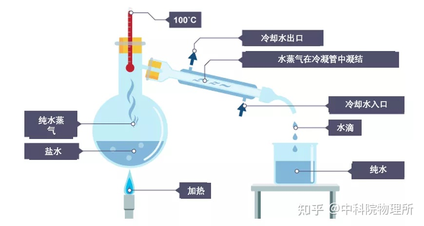
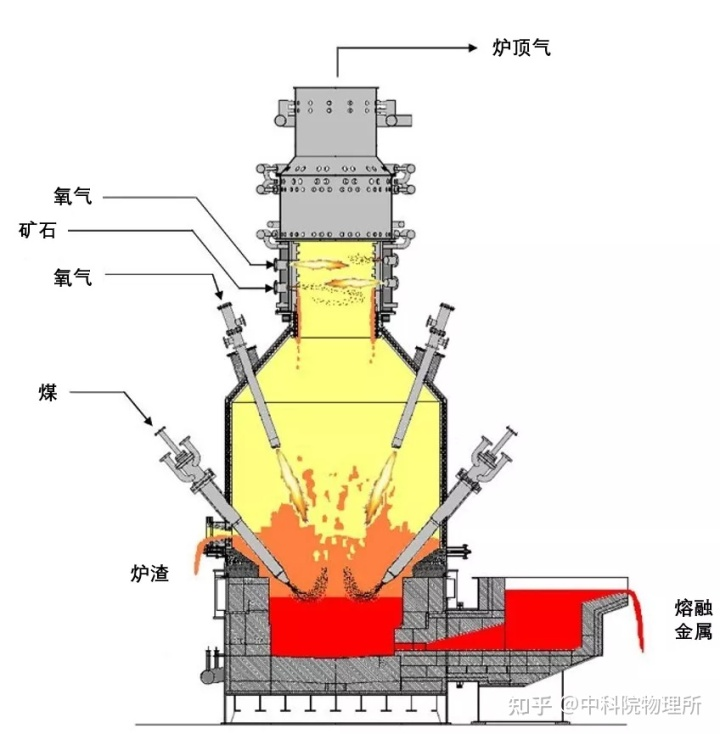
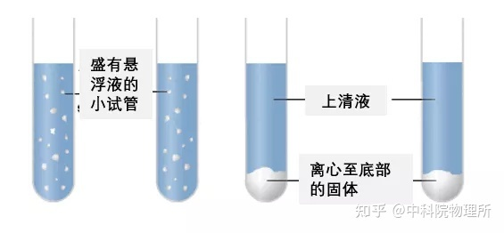
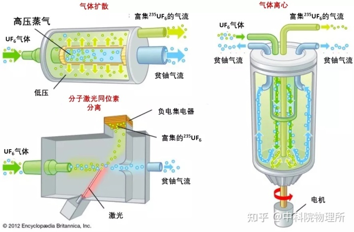

化工过程概述
作者：Erik Engheim - 知乎
如果只从标准教科书或高中课程中学习化学，很容易一叶障目不见泰山。
当同龄人刚开始用五颜六色的液体捣鼓有趣的化学实验的时候，十几岁的我就已经非常热爱化学这门学科了。当然，所有的孩子都想搞一些能爆炸的东西玩。化学对孩子们有一种天然的吸引力，因为它自带爆炸、闪光、气泡以及五彩斑斓的颜色，并且总能用到酷酷的、形状复杂奇特的玻璃器皿。
此外，我也碰巧是一个历史爱好者。有时读到有关金属加工的古老历史，或原子能、太阳能电池半导体等更现代的东西时，很难看出它们之间的共同点——因为学校里教的化学并没有那么“接地气”。这便是此文要做的事情。
混合与分离
简单来说，应用化学就是混合和分离。我们周围的世界充满了不同的元素，但它们通常以我们不想要的方式出现。比如说岩石富含铝、硅和铁，但它们结合在矿物里，没法直接用。
因此，在实践中，化学就是把我们需要的物质从无用的东西中分离出来。这样的途径纷繁复杂，以至于我们很容易忽略全局，没有意识到这只是分离两种或多种化合物的另一种形式。
下面，就让我们在不同的例子中，更好地了解分离和提纯化合物的所有方法。
总体思路
在讨论细节之前，让我概述一下总体思路。
把混合在一起的两个元素分开，有很多有创意的方法。例如，如果一个有磁性而另一个没磁性，可以用磁铁；如果一个在加热时变成气体，而另一个不变成气体，则很容易将气体和固体分离；或者一种化合物比另一种密度大得多，就可以使用人工重力（离心伪力）进行分离，比如使用离心机。
但是如果这些元素是以化学方式结合的，那怎么把它们分开呢？假设你有原子 X 和 Y ，它们被束缚成化合物 XY 。
加热通常会使化合物分解。X 元素和 Y 元素从化合物状态分离开来，但它们仍然混在一起。解决方案通常是加入第三个元素 Z 。如果 Z 可以与 Y 形成比 X 更牢固的键，那么 Y 和 Z 将结合在一起形成 YZ ，这时 X 元素可以被单独保留。
化学键的强度决定了你需要加热到什么程度来将其破坏。因此，如果加热到足够分解 XY ，但不足以分解 YZ 的温度，那么你能够逐渐提纯出元素 X 。

蒸馏-按物相分离
水中可能混有一些我们不想要的杂质化合物，通过蒸馏的方式可以得到干净的水。蒸馏利用的是一种常见的分离技术，即根据不同的相，分离两种化合物。三种常见相分别是固体、液体和气体。不同相的化合物更容易分离。
将水加热到 100°C 以上时，它会从液体变为气体（水蒸气）。这时，水从与之混合的东西中分离出来。把水蒸气引到别处并冷却，就能得到干净的水。我们将水分离了出来，可能剩下某种固体，比如说盐（由气体和金属组成的化合物）。
生产酒精时的做法正好相反。酒精的生产常常伴有水的参与。生产中用酵母和糖最高能得到浓度为 14% 的酒精，那如何让这个数字变得更高呢？
酒精的沸点比水低。因此，如果将温度保持在 100°C 以下，则只有酒精蒸发。然后将其冷却以回收浓缩酒精。如果不够纯净的话，原则上只要重复这个过程就可以了。
冶炼
铁矿石和铜矿石不只含纯金属，通常以 Fe₃O₄ 和 Fe₂O₃ 的方式存在，其中含有我们不需要的氧。很多情况下岩石里面混杂着根本不含铁的矿物，我们就可以粉碎岩石，并按重量分离——重的石头更有可能含有铁化合物。
然而，在化合物中分离氧和铁还需要化学的手段。这时“冶炼”就出场了。任何化合物被加热时，只要有足够的热量，将它们结合在一起的化学键就会断裂。因此，当我们加热铁矿物时，我们会得到铁氧分离的一锅“热汤”。
我们不期望的是，一旦“原子汤”冷却下来，它们就会再次结合在一起。解决办法是添加一些与氧的结合力更强的物质。例如，氧和碳成键生成二氧化碳（CO₂），这一化学键非常强，意味着将原子分开将需要大量的热量。
发现与蒸馏的类同之处了吗？高温能将部分化合物转化为气体。在熔炉中，温度可能足以分解铁原子和氧原子，但不足以使氧原子和碳原子彼此分离。
因此，当我们通过高温将铁、氧和碳“烩成一锅汤”时，碳和氧会结合在一起，再也不会分离。我们现在可以像蒸馏一样去除碳和氧，因为二氧化碳是气体，而铁是液体。

还有另一种形式的分离。你知道油和水是如何分层的吗？铁和炉渣也会发生这种情况。炉渣是铁矿石中我们不需要的所有其他化合物的总称。我们将碳酸钙（CaCO₃）扔进去，让它与铁矿中我们不需要的二氧化硅（SiO₂）反应，会产生浮在纯铁之上的炉渣，我们称之为相分离。然后可以将炉渣倒出；因为它比铁更脆，我们还可以像铁匠一样把它敲下来。
即使没有化学反应，熔炼也可以用于分离。就像蒸馏一样，不同的化合物加热时的反应不同：炉渣通常比氧化铁更易熔化。因此，如果有足够的热量，炉渣会融化并在底部聚集，而氧化铁则以固体的形式留在顶部。添加一些辅助物质可以也促进这一过程，通常是可以降低炉渣熔点的石灰石（碳酸钙）碎块，使其更易熔化。
离心
离心机可以看做是一个飞速旋转的圆筒，其中最重的化合物被推到底部，以便移除。这是另一种机械分离的形式。

离心机在核科学中非常重要。
因为质子数相同，铀的各个同位素具有相同的化学性质，没法用化学方法分离开。中子的数量决定了它们在核反应中的性质，不同中子数的铀同位素，具有非常微小的重量差别。

为了更方便提纯，利用铀原料与氟气反应生成六氟化铀（ UF₆）：以气体形式存在的分子相对容易移动。但是由于质量的差别很小，必须增加离心机的转速，使较重的气体聚集起来。
就像许多分离过程一样，这些操作必须一次又一次地重复。提取出的较重气体并不是完全纯净的，因此需要把它们放入新的离心机，重复离心过程，才会得到我们需要的越来越高浓度的铀同位素。
固液气分离
制造太阳能电池板需要非常纯的硅，而常规的冶炼操作无法提供足够的纯度。我们可以参考蒸馏的技巧，以某种方式把我们想要的或不想要的物质转化为气体，剩下固体或液体。
通过一些步骤，我们可以将硅 (Si) 转化为硅烷 (SiH₄) 气体。其他杂质不一定会在这个过程中变成气体，我们得以将硅从其他杂质中分离出来。
当然，之后我们需要将混合物中的氢去除掉，这种化合物会在高温下裂解，氢可以被燃烧掉。
浸出
将矿物溶解在酸或其他液体中，可以将其中不同的化合物分离开来。我们想要的化合物可能会溶解，而不感兴趣的物质会落到底部被过滤掉。
这就是一些像铀这种物质的加工方法。我们可以使用浸出法从铀矿中生产低纯度的铀，俗称“ 黄饼” (yellow cake)。
虽然具体过程不完全相同，但这与从沙子中分离盐有一些相似之处。盐会溶于水，沙子不溶解，只会沉入水底。这样你就可以过滤掉沙子，然后通过蒸馏来回收盐。
粉末化、混合和浆料
关于将物质分离，我们已经谈了很多，但有时为了分离，首先要混合。例如，如果矿物是大块固体，那么它在酸中就会溶解得很慢；再比如炼铁时需要石灰石中的碳酸钙与尽可能多的矿石发生反应。
别忘了，化学反应只有在原子相互接触、发生相互作用时才能发生。内部的岩石不能与外部的酸直接反应，只有岩石表面才可以。
汽油在内燃机中剧烈燃烧也是这个道理。只有液滴表面的汽油分子才可以与氧结合，产生热量。因此，汽车发动机中的化油器的任务，就是制造雾状的氧。大量的微小液滴比少数的大液滴具有更大的表面积，为迅速反应提供了机会，从而引发爆炸。就像碎石的表面积比大卵石大一样，制造火药时我们也需要将原料磨成粉末，获得更大的接触面积来相互反应，创造许多并行反应来引发爆炸。
于是在化学反应中经常会用到浆料（类似泥浆的固液混合物）——粉末与液体充分混合，能够让化学反应更容易发生。
如何让气体与固体发生反应？只是向一块石头喷射某种气体可没啥用。
塑料也被称之为聚合物，塑料的生产就是将相对简单的分子链连接成较长的分子链。
将乙烯（C₂H₄) 气体鼓进通过装有齐格勒-纳塔（Ziegler-Natta）催化剂及其溶剂的容器，乙烯分子可以结合成一条长链。你得到了想要的化合物——聚乙烯（一种塑料聚合物），但随之而来的是混在其中的许多杂质。
因此，接下来等着你的是分离、过滤、溶解、干燥等一系列步骤。
将分离步骤和混合步骤结合
在实际的化学过程中，我们很少仅在一个混合步骤或一个分离步骤后，就能得到想要的东西。无论你使用蒸馏、浸出、熔炼、过滤、离心还是化学反应，你更容易得到一些不需要的化学物质。要想只留下想要的物质，需要使用许多不同的分离步骤。
复杂之处就在于，通常执行一种特定的分离操作需要先进行某种混合。因此，生产任何东西实际上都是不断地进行各种各样的分分合合。
结论
化学过程看起来千头万绪、难以理解，但它们基本上都是混合与分离，只是用到的工艺方法不同。一个宏观上看起来是分离的操作，其实可能是很多细小的混合和分离步骤的总和，而这些小步骤甚至还可以做进一步细分。
读罢此文，无论是金属冶炼、酿造、炼油还是聚合（塑料生产），利用上述的框架，您都能对所涉及的化学过程有一个更好的了解。